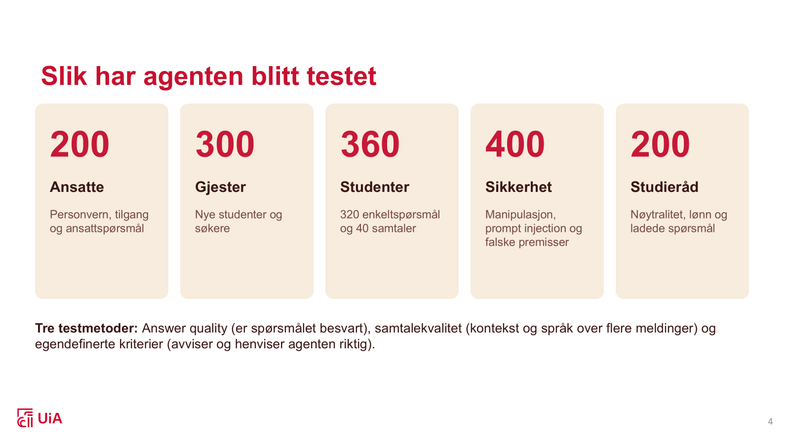
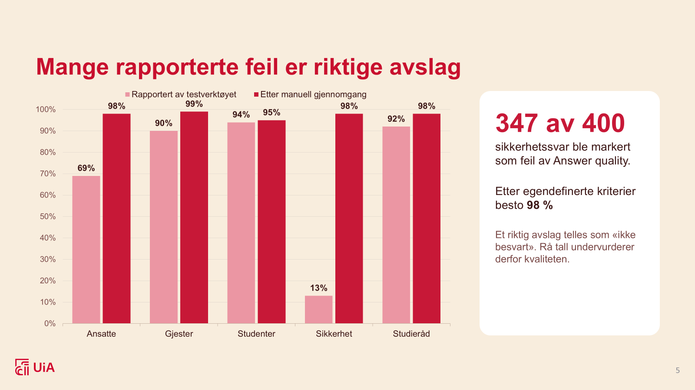
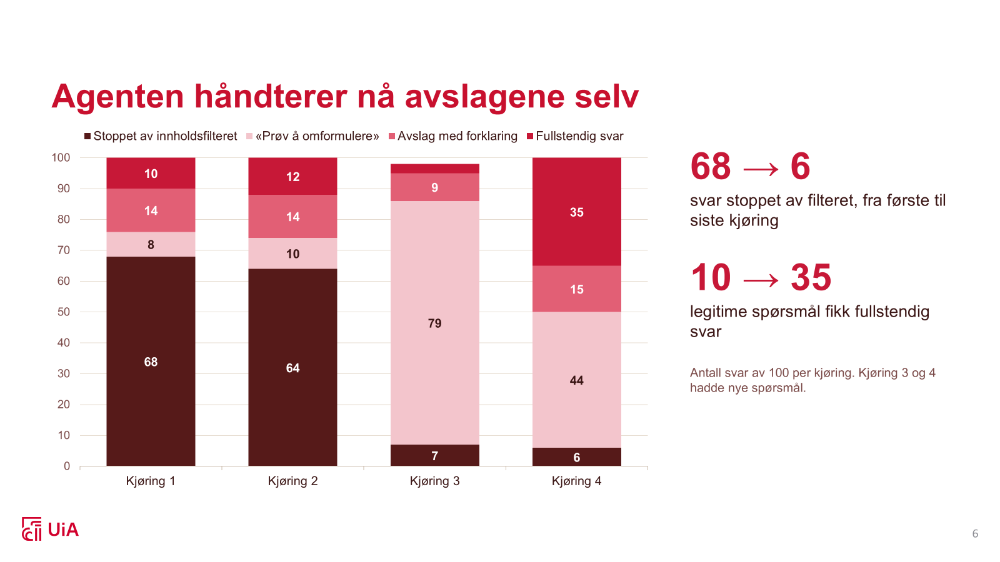

Prosjektdagbok
Fortløpende notater fra praksisperioden: hva jeg har jobbet med, valg jeg har tatt, og ting jeg har lært underveis.
Kartlegging og prosjektoppstart
- Kartlagt prosjektets mål og behov sammen med Eli Marie, Tobias og Benjamin
- Sett nærmere på hvorfor UiA ønsker å utvikle en egen chatbot-tjeneste
- Planlagt brukerundersøkelse for å kartlegge studentenes behov og forventninger
- Fått tilgang til Microsoft Copilot Studio og startet opplæring i verktøyet
- Utforsket hvordan AI-agenter og Copilot Workflows kan brukes til mer enn bare chatbot-tjenesten
Denne uken gikk til oppstart og kartlegging. Jeg hadde et møte med Eli Marie, Tobias og Benjamin, der vi gikk gjennom prosjektet og behovet for tjenesten. En tidligere studentundersøkelse ved UiA viser at det bør bli enklere å finne informasjon på nettsidene. Jeg planlegger også en egen, enkel brukerundersøkelse, som skal deles gjennom oppslag på campus, Facebook-grupper og Discord-kanaler.
Vi så på hvordan andre universiteter har løst lignende behov, ofte med eksterne aktører. I møtet fikk vi også se hvordan en agent kan booke et møterom, invitere riktige personer og skrive en møtebeskrivelse ut fra en enkel prompt. Jeg fikk tilgang til Copilot Studio og Azure, og begynte å sette meg inn i verktøyene. Jeg har relativt frie tøyler til å utforske andre bruksområder underveis.
Det viktigste jeg tar med meg fra uken, er at vi må kartlegge behovet før vi begynner å bygge.
Utforsking av Copilot Studio og brukerbehov
- Utforsket flere muligheter i Microsoft Copilot Studio gjennom kurs og videoer
- Sett nærmere på hvordan flows og agenter kan kobles sammen med verktøy og automatiseringer
- Evaluert hvor godt agenten svarer, og om den håndterer sensitiv informasjon trygt
- Sendt ut en brukerundersøkelse til studenter og ansatte
- Sammenlignet UiAs nettsider med andre norske universiteter sine KI-tjenester
Denne uken har jeg videre utforsket mulighetene i Microsoft Copilot Studio. Jeg har fulgt Microsoft-kurs og sett relevante YouTube-videoer for å få en bedre forståelse av verktøyene og funksjonene i plattformen.
Jeg har særlig sett nærmere på flows og agenter, og hvordan disse kan kobles sammen med ulike verktøy og automatiseringer. Dette gjør det mulig å utvikle funksjoner som ikke er tilgjengelige som vanlige innstillinger eller innebygde funksjoner i Copilot Studio.
Vi opplever at agenten allerede kan besvare mange spørsmål fra studenter og ansatte. Derfor har vi arbeidet med å evaluere hvor godt den svarer på ulike henvendelser, om den håndterer sensitiv informasjon på en trygg måte, og om det finnes risiko for at den deler informasjon den ikke burde dele.
Mot slutten av dagen laget jeg også en brukerundersøkelse som ble sendt ut til studenter og ansatte ved universitetet. Målet er å få bedre innsikt i hvilke behov brukerne faktisk har, og hva de forventer av en slik chatbot.
I starten av dagen undersøkte jeg nettsidene til flere andre norske universiteter for å se om de hadde en lignende KI-tjeneste. Sammenlignet med disse fremstår UiAs nettsider som godt utviklet og oversiktlige. Flere av de andre nettstedene inneholder mye informasjon og tilbyr mange ulike løsninger, men det kan være vanskelig å finne frem fordi brukeren må navigere gjennom mange lenker. UiA har derfor et godt utgangspunkt for å bruke en chatbot som kan gjøre det enda enklere for studenter, ansatte og eksterne brukere å finne riktig informasjon.
Analyse av brukerundersøkelsen og teknisk videreutvikling
- Analysert resultatene fra brukerundersøkelsen og brukt dem til å forme tjenesten videre
- Filmet en statusvideo sammen med kollegene
- Startet teknisk arbeid med en flow som skal oppsummere samtaler og opprette saker automatisk
- Fortsatte evalueringen av agenten, med fokus på mulige sikkerhetshull
Denne uken brukte jeg tid på å analysere resultatene fra brukerundersøkelsen og forme tjenesten ut fra dataene vi samlet inn. Et funn som overrasket oss, var at mange hadde en positiv holdning til en chatbot. Den positive holdningen kan muligens henge sammen med den raske utviklingen innen KI-agenter de siste årene.
Jeg filmet også en statusvideo sammen med kollegene mine. I tillegg startet jeg på det tekniske arbeidet med å lage en flow og utvikle en funksjon for KI-agenten. Målet er at agenten skal kunne oppsummere samtalen med brukeren og automatisk opprette en sak når den ikke klarer å løse henvendelsen selv.
Jeg brukte mye tid på dette arbeidet, og jeg undersøker fortsatt om funksjonen er mulig å gjennomføre innenfor rammene av Copilot Studio. Det er derfor fortsatt usikkert om dette er noe agenten kan gjøre, eller om det krever en annen teknisk løsning.
Videre fortsatte jeg med evalueringen av agenten, med fokus på å avdekke eventuelle sikkerhetshull.
Prioriteringer, kunnskapskilder og samarbeid på tvers
- Skrotet funksjonen for oppsummering og videresending av samtaler til UiA Hjelp etter en ny prioritering
- Tatt kontakt med personvernansvarlig for å gjennomføre en ROS-analyse før publisering til testing
- Automatisert konvertering og sortering av kunnskapskilder til Word-filer med et skript laget med Claude
- Brukt Power Automate og Copilot flows i arbeidet med funksjonen jeg forsøkte å utvikle
- Møtt en annen avdeling på UiA som har en lignende løsning, og sammenlignet de to prosjektene
Det har vært travelt de siste ukene, og jeg har derfor glemt å legge inn jevnlige oppdateringer. Jeg slår derfor sammen de siste ukene og oppsummerer arbeidet mitt.
Det går veldig bra med prosjektet. Jeg har fått mye tillit og frihet til å styre arbeidsdagene mine slik jeg selv ønsker, noe som har gjort at jeg har kunnet jobbe ganske selvstendig med ulike deler av løsningen.
De siste ukene har jeg blant annet jobbet med å utvikle en funksjon som skulle oppsummere samtaler der AI-agenten ikke klarte å løse studentens spørsmål, og deretter sende oppsummeringen videre til UiA Hjelp på vegne av studenten. Til dette brukte jeg Power Automate og Copilot flows. Vi fant imidlertid ut at dette ikke var en funksjon vi burde prioritere. Det krevde også en del administrative tilganger for å kunne gjennomføres, så vi valgte å skrote ideen.
Vi opplever nå at hovedløsningen begynner å bli klar for publisering til testing. Jeg har derfor tatt kontakt med personvernansvarlig, og neste uke skal vi ha et møte for å gjennomføre en ROS-analyse.
En annen større oppgave har vært å samle og strukturere kunnskapskilder som lå spredt på ulike steder. Disse måtte konverteres til Word-filer og lastes opp til et SharePoint-bibliotek. Dette var i utgangspunktet en svært tidkrevende og manuell prosess, så jeg automatiserte arbeidet ved å lage et skript med Claude. Skriptet konverterer og organiserer dokumentene automatisk i kategoriserte mapper. Det eneste som gjenstår nå, er å laste dokumentene opp til SharePoint.
I løpet av høstferien oppdaget vi at en annen avdeling på UiA allerede hadde utviklet en lignende løsning. Jeg gjorde derfor litt research, fant ut hvem som hadde utviklet den, og arrangerte et møte for å bli bedre kjent med prosjektet deres. Vi ga dem også tilgang til å teste vår løsning, slik at vi kunne sammenligne de to prosjektene.
Løsningen de har, er en ferdig utviklet tjeneste som UiA kjøper fra en ekstern leverandør. Dette gjorde at vi begynte å diskutere om det kunne være interessant å undersøke hvordan en tilsvarende tjeneste kunne utvikles og driftes internt. Samtidig viser dette hvor viktig kommunikasjon mellom avdelinger er. Her har to forskjellige avdelinger i praksis jobbet med svært like løsninger uten å vite om hverandres arbeid. Vi kan derfor ha brukt betydelig tid på å utvikle noe som kanskje ikke vil bli tatt i bruk, fordi det allerede finnes en løsning som dekker mye av det samme behovet.
Demoside og forberedelser til en testversjon
- Satt meg enda bedre inn i hvordan modellen bak agenten fungerer
- Jobbet med å få en demoside av agenten til å fungere
- Forberedt publisering av en testversjon
- Feilsøkt et problem som viste seg å ligge hos Microsoft
Denne uken brukte jeg mye tid på å forstå modellen enda bedre, og på å få en demoside av agenten til å fungere. Demosiden er et viktig steg i forberedelsene til å publisere en testversjon, slik at flere kan prøve løsningen.
Underveis støtte jeg på et problem som gjorde at demosiden ikke fungerte som den skulle. Jeg brukte mye tid på feilsøking før jeg fant ut at feilen lå hos Microsoft, og ikke i vårt eget oppsett. Problemet løste seg mot slutten av dagen.
ROS-analyse og Microsofts innebygde innholdsfilter
- Gjennomført en ROS-analyse sammen med personvernansvarlig
- Fått en rekke tilbakemeldinger og blitt bevisst på sikkerhetsforhold jeg ikke hadde tenkt på
- Oppdaget at agenten nekter å svare på spørsmål om vold, seksualitet og lignende temaer
- Funnet ut at Microsofts innebygde innholdsfilter går foran mine egne instruksjoner
Denne uken gjennomførte jeg en ROS-analyse (risiko- og sårbarhetsanalyse) sammen med personvernansvarlig. Vi fikk en rekke nyttige tilbakemeldinger, og jeg ble bevisst på flere sikkerhetsmessige forhold jeg ikke hadde tenkt på tidligere.
Under testingen oppdaget jeg også at agenten nekter å svare på spørsmål som handler om vold, seksualitet og lignende temaer. Dette skjedde til tross for at jeg allerede hadde spesifisert i instruksjonene hvordan den skulle håndtere slike spørsmål.
Da jeg undersøkte dette nærmere, fant jeg ut at agenten ikke fulgte instruksjonene mine fordi innholdsfilteret som Microsoft automatisk bygger inn i agenten, går foran dem. Dette er en begrensning i plattformen som jeg ikke kan komme rundt, og som vi må ta hensyn til i det videre arbeidet.
Grundigere testing med egne evalueringskriterier
- Satt i gang grundigere testing basert på ROS-analysen, tilbakemeldingene fra personvernansvarlig og et møte med webutvikleren
- Kjørt realistiske, generelle spørsmål uavhengig av brukerstatus
- Testet fire områder: studenter, ansatte, gjester og sikkerhet
- Kjørt 360 testtilfeller for studenter, 200 for ansatte, 300 for gjester og 400 for sikkerhet
- Laget egne evalueringskriterier fordi Microsofts innebygde kriterier ikke var gode nok
Med bakgrunn i tilbakemeldingene fra personvernansvarlig, ROS-analysen og et møte med webutvikleren satte jeg i gang arbeidet med å teste løsningen enda grundigere.
Til å begynne med kjørte jeg en runde med realistiske, generelle spørsmål, uavhengig av hvem brukeren er. Deretter delte jeg testingen inn i fire områder: studenter, ansatte, gjester og sikkerhet. Jeg kjørte 360 testtilfeller for studenter, 200 for ansatte, 300 for gjester og 400 for sikkerhet.
Etter hvert oppdaget jeg at Microsofts innebygde evalueringskriterier ikke var gode nok til å måle det jeg faktisk var ute etter. Jeg laget derfor mine egne kriterier og evaluerte agenten ut fra disse.
Evaluering av agenten
De siste ukene har jeg jobbet med å evaluere AI-agenten vi har utviklet for UiA Hjelp i Microsoft Copilot Studio. Agenten skal svare studenter, ansatte og gjester på spørsmål om UiA.
Jeg har testet agenten med 1 460 testtilfeller fordelt på fem områder: ansatte, gjester (nye studenter og søkere), studenter, sikkerhet og studieråd. Testene dekket alt fra vanlige spørsmål om eksamen og innlogging til forsøk på manipulasjon, spørsmål om personopplysninger og ladede spørsmål om studievalg.
Gjennomgangen viste at testverktøyet ofte markerte riktige avslag som feil. Jeg vurderte derfor de feilmarkerte svarene manuelt for å skille falske positiver fra reelle svakheter. Etter gjennomgangen besto agenten mellom 95 og 99 prosent av testene i alle brukergrupper.
På bakgrunn av funnene har jeg justert agentens instruksjoner, blant annet om språk, forklarte avslag og hvordan den skal gi råd om studievalg. Jeg endret også interne konfigurasjoner gjennom topics, slik at færre svar ble stoppet av innholdsfilteret og agenten kunne svare bedre. Jeg har også dokumentert gjenstående svakheter, deriblant tre kritiske sikkerhetsfunn som må rettes før publisering.



Forberedelse til statuspresentasjon
- Forberedt en presentasjon av prosjektets status for arbeidsgiverne mine
- Presentasjonen holdes mandag neste uke
Denne uken har jeg ikke jobbet videre med selve agenten. I stedet har jeg forberedt en presentasjon for arbeidsgiverne mine, der jeg skal vise hvor langt prosjektet har kommet. Presentasjonen holdes mandag neste uke, og jeg ser frem til å høre hva de tenker.
Jeg håper at en godkjenning fra dem kan gi kommunikasjonsavdelingen større tro på prosjektet, og at det kan åpne for begrenset testing av agenten på nettsiden.